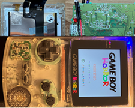

Projects
2024 Duck Hunt GameBoy Game.

The aim of this project was to create a simple GameBoy version of the Duck Hunt game from the NES era.
A demo version of the game can be played here.
2024 GameBoy Horror Replica.

The aim of this project was to create a working replica of the Gameboy Horror which appears in the popular Nintendo GameCube game Luigi's Mansion. There were two parts to this replica the creation of the hardware and a simple app that could be run on the GameBoy.
2020 Farm field desktop App.

This project aimed to develop a desktop application to support users to manage their farming/agricultural business budget and, therefore, assist them to make informed management decisions. This is an area which have proven to be problematic at times due to poor organisational and time management skills, lack of understanding of the current market environment, poor record keeping and literacy issues which can impact on the understanding of info, market changes, usage of technology, difficulties in meeting deadlines for agricultural schemes and therefore, financial issues. Thus, this project intends to assist users with their budgeting and access to applications for governmental support schemes which are an important source of income within this industry. Finally, the program anticipated to be user friendly with people with literacy difficulties which is a wide problem identified in the farming/agriculture community. The project report can be downloaded here and the App files from here.
2014The Agronomic Consequences Of Metaldehyde Being Removed From The UK Market.
This project aimed to study the consequences of Metaldehyde being Rrmoved from the UK market and explore the alternitives. The project report can be downloaded here
2010 Root Responce To Waterlogging.

This project aimed to study and map root response to waterlogged. This information could be used to quantify crop resistance to waterlogging damage. An imaging technique was developed which allowed root tips to be plotted as they grew through soil during a sequence of dry and waterlogged cycles. The project report can be downloaded here
2004 Allelopathy As An Aid To Weed Control.
This project aimed to study the effects of allelopathy and wheather it could be used to effectacally control weeds. The project report can be downloaded here